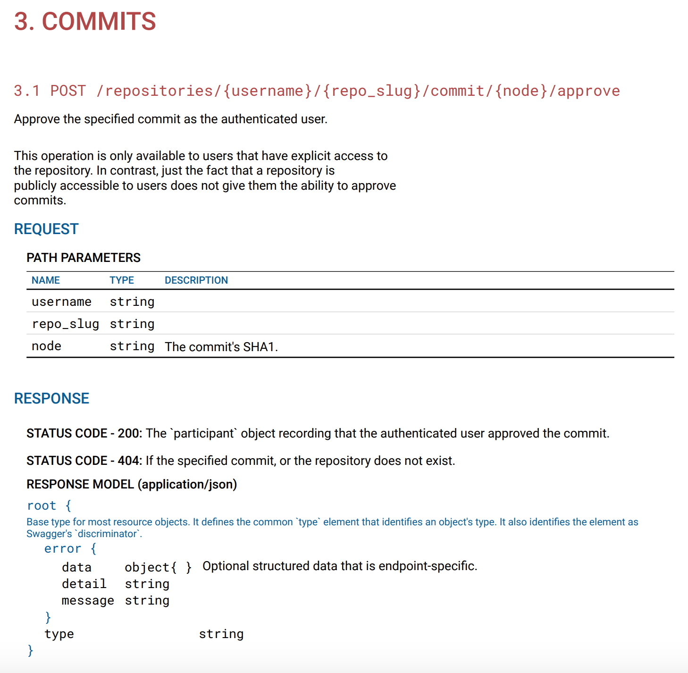

RapiPDF

<!doctype html>
<html>
<head>
<script src="https://unpkg.com/rapipdf/dist/rapipdf-min.js"></script>
</head>
<body>
<rapi-pdf
style = "width:700px; height:40px; font-size:18px;"
spec-url = "https://mrin9.github.io/RapiPdf/examples/specs/petstore.json"
button-bg = "#b44646"
> </rapi-pdf>
</body>
</html>